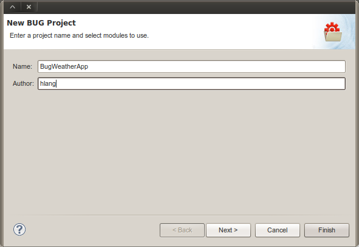
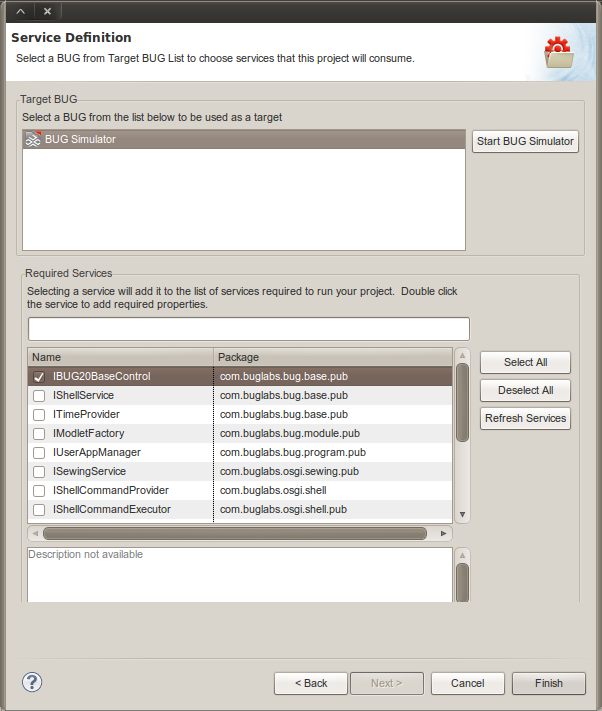
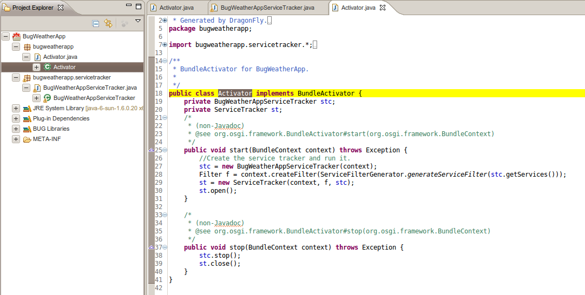
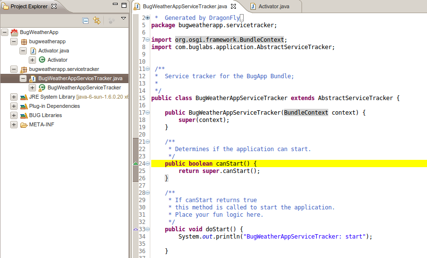
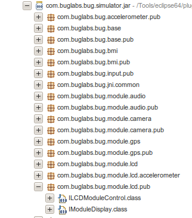

BugWeather App Part 1 - Getting Started
Contents |
Introduction
This is the first in a series of tutorials for the BugWeather app (not to be confused with WeatherBug). Each of the tutorials will take you through some of the basic development tasks in Dragonfly SDK 2.0 that you will need to master. Even if you have experience with the older Dragonfly SDK, these tutorials will help you make the transition to the new code architecture.
In this first tutorial, we will walk through the steps of setting up a BUG project in Eclipse and building something like "Hello World", but more useful for our BugWeather app.
About the BugWeather App
The main objective of the BugWeather app is to display information about the local weather. At first, we will create a basic app that uses the LCD module to set the stage for some real weather data. In the following tutorials, we will run the app on BUG Simulator, and later integrate the app with a REST web service to get and display weather data.
Topics Covered
- Creating an app with Dragonfly SDK 2.0
- Understanding the Activator and ServiceTracker and how they are used
- Calling the LCD module and displaying GUI content using AWT*
Prerequisites/Notes
- Installed Dragonfly SDK 2.0
- BUG hardware: Not necessary
Creating a New Dragonfly Project
The first step is to create a Dragonfly project in Eclipse that has the basic code for creating and running a Dragonfly app.
New Project Window
- If necessary, switch perspectives in Eclipse to the Dragonfly perspective. (Hint: Go to Window > Open Perspective > Other)
- In the toolbar, select the 'Launch Virtual BUG' icon

- Go to File > New > Project
Or, click the New BUG Project icon in the toolbar. - In the New BUG Project window:
In the Name field, type: BugWeatherApp and click "Next"

New Project: Service Definition
- After that, the "Service Definition" window is displayed, where you need to select the target BUG device. If the BUG device list is empty or if the BUG simulator row is missing, click on "Start BUG Simulator". This will startup the built-in BUG Simulator, which you can then select.
- After selecting a BUG device, the lower part of the window will display a list of OSGI services that are availalble for the select BUG. If you do not find the device you are looking for, it helps to select one anyway, since this will generate much of the basic code you need in building a BUG app.
- We are looking for the LCD module. Since it is not currently in this list, we select the checkbox next to the first entry for IBUG20BaseControl.
- After completing your selections, click on the "Finish" button.

Dragonfly Project Overview
Activator
The new project wizard will automatically create a two Java files: Activator.java and BugWeatherAppServiceTracker.java. In the screenshot below, you will notice that these are in different packages. Also note the Activator stub code sample on the right side. A private BugWeatherAppServiceTracker member is instantiated in the start method.
The Activator class implements org.osgi.framework.BundleActivator, which means it handles the starting and stopping of OSGi services (when hardware is added or removed). Through the Activator, the BugWeatherAppServiceTracker instance will handle start and stop events for each device it manages.

BugWeatherAppServiceTracker
Since we had selected the IBUG20BaseControl service in the New Project wizard, the Dragonfly SDK created a basic ServiceTracker class that extends AbstractServiceTracker. If we had not selected a service, this class would not have been created.

Modify initServices
If you scroll to the bottom of the BugWeatherAppServiceTracker class, you will see the initServices method. Here, you can see the fully-qualified name (FQN) of the IBUG20BaseControl. You can modify this method to add or remove services that you need.
public void initServices() {
getServices().add("com.buglabs.bug.base.pub.IBUG20BaseControl");
}
For the purposes of this tutorial, we really want a service for interacting with the LCD display and not the BUGbase. To make that change, we need to determine the FQN of the desired module. Sometimes, it is helpful to browse the BUG Libraries found in the Project Explorer. Specifically, the com.buglabs.bug.simulator.jar has the collection of device services that you can use in the BUG Simulator.
Exploring through the list, we zero in on the "lcd" packages. The package that ends in "lcd.pub" is expanded in the image below and you can see two interface classes. We will choose the IModuleDisplay class.

You can copy the entire FQN for IModuleDisplay by right clicking on it and selecting "Copy Qualified Name" and pasting it into the initServices code.
Add IModuleDisplay Variable
Since we will need a member variable for IModuleDisplay, we should at it at the beginning of the class code like this.
private IModuleDisplay display;
And inside of the doStart() method, we need to instantiate our display like this:
/**
* If canStart returns true
* this method is called to start the application.
* Place your fun logic here.
*/
public void doStart() {
System.out.println("BugWeatherAppServiceTracker: start");
display = (IModuleDisplay) getService(IModuleDisplay.class);
LCDApp app = new LCDApp(display);
}
LCDApp?! Where does that come from? It is a new class we need to create that will take the IModuleDisplay service and use AWT to write objects and content to the LCD.
LCDApp
We are going to put our LCDApp class in a new package called bugweatherapp.app (and suddenly I wish that I named the project "BugWeather"). Go ahead and create a new package with this name (Hint: Go to File > New > Other and look for Java > Package).
Next, create a new Java class here called LCDApp. Here's the entire code for LCDApp. You can add more bells and whistles if you're really awesome with AWT programming.
package bugweatherapp.app;
public class LCDApp {
private IModuleDisplay display;
public LCDApp(IModuleDisplay display) {
super();
this.display = display;
Label label1 = new Label();
label1.setBounds(10,60, 300, 30);
label1.setText("Current Weather");
label1.setVisible(true);
label1.setAlignment(Label.CENTER);
Frame frame = display.getFrame();
frame.setTitle("BUG Weather App");
frame.setVisible(true);
frame.setLayout(new BorderLayout());
frame.add(label1, BorderLayout.NORTH);
}
}
Now that we have a LCDApp class, we can organize the imports in BugWeatherAppServiceTracker and fix the compiler error. In the next tutorial, we will show you how to use the BUG Simulator and see whether this code works. Fingers crossed!